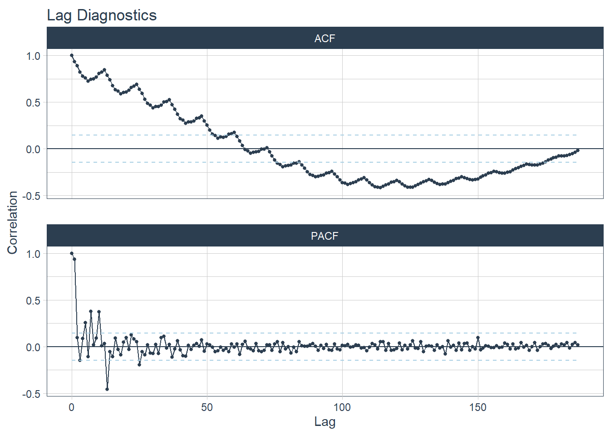

Capítulo 5 Conceitos Teóricos
Aqui vamos descrever alguns conceitos fundamentais sobre a teoria de séries temporais. Em particular, entender o que é um processo estocástico, a média, a função de covariância, processos estocásticos e a função de autocorrelação.
5.1 Média, Variâncias e Covariâncias
Agora vamos introduzir várias medidas teoricas utilizadas para descrever como séries temporais se comportam. Como é usual em estatística, a descrição completa da série envolve uma função de distribuição multivariada a amostra conjunta dos valores \(y_1, y_2, ..., y_n\), enquanto que uma descrição mais econômica pode ser obtida em termos das funções média e de autocorrelação. Como a correlação é uma característica essencial da análise de séries temporais, as medidas de descrição mais úteis são aquelas expressadas em termos função de autocorrelação e função de autovariância.
Vamos discutir alguns conceitos importantes relacionados a todos os tipo de modelos estatísticos de série temporal. Especificamente podemos utilizar algumas medidas para descrever uma série temporal.
5.2 Função Média
A função média descreve o valor esperado de uma série temporal. Assim, para um processo estocástico \(\{ Y_t\}\), a função média é definida como:
\[\mu_t = E(Y_t)\] para \(t = 0,1,2,...\). Assim, \(\mu_t\) é o valor esperado do processo no tempo \(t\).
Exemplo 1: Função Média de Média Móvel
Para uma media móvel dada por \(\frac{1}{3}(w_{t-1} + w_t + w_{t+1})\), seu valor esperado (função média) é igual a zero, \(\mu_y = 0\). Assim, a função média ao redor de zero descreve bem o comportamento geral da média móvel. O mesmo pode ser dito do ruído branco.
df %>%
ggplot(aes(x = x, y = ruido_branco)) +
geom_line(aes(color = "Ruído Branco")) +
geom_hline(aes(yintercept = 0, color = "Função Média"), linetype = 2, size = 1.5) +
labs(x = "Tempo", y = "",
title = "Média Móvel",
subtitle = "Função Média da Média Móvel é Zero",
color = "") +
theme(legend.position = "bottom")(#fig:ruido_media)Função Média de um ruído branco
Exemplo 2: Função Média de Random Walk com Drift
Para um random walk com drift qual a função média? Dado que este modelo é dado por \(y_t = \delta t + \sum_{j=1}^t w_t\), como \(E(w_t) = 0\) e como \(\delta\) é uma constante, temos
\[\mu(yt) = \delta t\]
Assim, a função média de uma random walk com drift é uma linha reta com inclinação \(\delta\). Uma comparação de uma random walk com drift e sua função média pode ser vista na figura 5.1.
df %>%
# criar a função média da random walk
mutate(funcao_media_random_walk = .2*x) %>%
ggplot(aes(x = x)) +
geom_line(aes(y = random_walk_drift, color = "Random Walk com Drift")) +
geom_line(aes(y = funcao_media_random_walk, color = "Função Média"), linetype = 2, size = 1.5) +
labs(x = "Tempo", y = "",
title = "Random Walk com Drift Delta = 0.2",
subtitle = "A função Média é uma linha Reta com Inclinação Delta = 0.2",
color = "Modelo:")Figure 5.1: Função média de uma série random walk com drift
Exemplo 3: Função Média de um Sinal mais Ruído
A função média para um modelo aditivo na forma \(y_t = s_t + w_t\) é obtido por:
\[\mu_{yt} = E(y_t) = E[2 \cos(2\pi \frac{2t + 15}{50}) + w_t]\]
Novamente, \(E(w_t) = 0\) e os demais termos são constantes, logo:
\[\mu_{yt} = E(y_t) = 2 \cos(2\pi \frac{2t + 15}{50})\] A média móvel é apenas o sinal sem o ruído.
df %>%
ggplot(aes(x = x)) +
geom_line(aes(y = curva_onda, color = "Função Média"), size = 1.5, linetype = 2) +
geom_line(aes(y = curva_onda_ruido, color = "Sinal com Ruído")) +
labs(title = "Curva em Onda e Sua Função Média",
subtitle = "A função Média é o Sinal sem Ruído",
color = "") +
theme(legend.position = "bottom")(#fig:sinal_media)Função Média de uma série com sinal
5.3 Função de Autocovariância
A função de autocovariância mostra a covariância de um processo consigo mesmo em dois pontos diferentes no tempo. Assim, para uma série mensal de preços, a função de autocovariância mostra a relação entre \(y_{jan}\) e \(y_{fev}\), que são os valores observados de preço para janeiro e fevereiro, respectivamente.
A função de autocovariância \(\gamma_{t,s}\) é definida como:
\[\gamma_{t,s} = Cov(Y_t, Y_s)\]
para \(t,s=0,1,2,...\)
Onde \(Cov(Y_t,Y_s) = E[(Y_t - \mu_t)(Y_s - \mu_s)] = E[Y_t Y_s) - \mu_t \mu_s\).
Portanto, a autocovariância mede a dependência linear entre dois pontos na mesma série observadas em pontos diferentes. Séries que são muito suavizadas exibem funções de autocovariância que permanecem altas mesmo quando o \(t\) e o \(s\) estão muito longes entre si. Séries com muita agitação tendem a ter funções de autocovariância que são próximas de zero para valores muito distantes entre si.
Lembre que se \(s = t\), ou seja, se estivermos comparando uma observação no tempo consigo mesmo, a autovariância se reduz ao valor de variância, porque
\[\gamma_{y}(t,t) = E[(y_t - \mu_t)^2] = \text{Var}(x_t)\]
Exemplo 1: Autocovariância de Ruído Branco
Para uma série temporal ruído branco \(w_t\) que tem \(E(w_t)=0\), temos que
\[\gamma_w = Cov(w_s, w_t) = 0\]
para \(s \neq t\). Assim, a relação linear entre duas observações é zero. O valor de uma observação num ponto no tempo não influencia em nada os valores observados nos demais pontos do tempo.
Exemplo 2: Autocovariância de uma Média Móvel
Considere nosso exemplo de uma média móvel. Assim,
\[\gamma_v (s,t) = cov(v_s, v_t) = cov \{ \frac{1}{3}(w_{s-1} + w_s + w_{s+1}), \frac{1}{3}(w_{t-1} + w_t + w_{t+1}) \}\]
Quando \(s = t\), temos
\[\gamma_v (s,t) = \frac{1}{9}cov\{(w_{t-1} + w_t + w_{t+1}), (w_{t-1} + w_t + w_{t+1}) \}\]
\[\gamma_v (s,t) = \frac{1}{9}\[ cov(w_{t-1}, w_{t-1} + cov(w_{t} + w_t) + cov(w_{t+1} + w_{t+1}) \]\]
\[\gamma_v (s,t) = \frac{3}{9} \sigma^2_w\]
O mesmo exercício pode ser feito para \(s = t + 1\), quando analisamos observações que estão distantes uma observação entre si (janeiro e março, por exemplo), onde \(\gamma_v (t + 1, t) = \frac{2}{9}\sigma^2_w\). Quando as observaçãos estão separadas por dois períodos, \(|s-t| = 2\), temos \(\gamma_v(s,t) = \frac{1}{9}\sigma^2_w\), e quando as observações estão separadas por mais de dois períodos, \(|s-t| > 2\), temos \(\gamma_v(s,t) = 0\).
Assim, quando suavizamos um ruído branco utilizando uma média móvel, adicionamos um pouco de covariância, mas esta dependência linear se reduz com o aumento da separação entre os valores. Assim, a relação entre janeiro e fevereiro é mais forte que a relação entre janeiro e março. Contudo, a relação entre janeiro e abril seria igual a zero, dado que \(| \text{Jan} - \text{Abr} | > 2\).
Exemplo 3: Autocovariância de um Random Walk
Para um modelo random walk, \(y_t = \sum_{j = 1}^t w_t\), temos que
\[\gamma_y (s,t) = cov(y_s, y_t) = cov \left( \sum_{j=1}^2 w_j, \sum_{k=1}^t w_t\right) = \min\{s,t\} \sigma^2_w\]
porque o \(w_t\) são variáveis não correlacionadas entre si. Nota que, diferentemente dos exemplos anteriores, a função autocovariância de uma random walk depende no valor em particular de \(s\) e \(t\), e não na separação entre as observações ou no lag. Perceba também que a variãncia de uma random walk, \(var(y_t) = t \sigma^2_w\), aumenta sem limites quando \(t\) cresce. O efeito desta variância pode ser observada na figura para o random walk. Conforme \(t\) aumenta, mais e mais a variável se distancia da sua função média \(\delta t\).
df %>%
# criar a função média da random walk
mutate(funcao_media_random_walk = .2*x) %>%
ggplot(aes(x = x)) +
geom_line(aes(y = random_walk_drift, color = "Random Walk com Drift")) +
geom_line(aes(y = funcao_media_random_walk, color = "Função Média"), linetype = 2, size = 1.5) +
labs(x = "Tempo", y = "",
title = "Random Walk com Drift Delta = 0.2",
subtitle = "Quanto maior o t, maior a distância entre a Série e sua Função Média",
color = "Modelo:") +
theme(legend.position = "bottom")Figure 5.2: Autocovariância de uma random walk com drift
5.4 A Função de Autocorrelação (FAC)
A correlação mensura a relação linear entre duas variáveis. A autocorrelação por sua vez mede a relação linear entre valores defasados ( lagged ) de uma série temporal.
Uma forma de mensurar como um valor se relaciona a um valor passado é utilizando a Função de Autocorrelação (FAC), ou ACF em inglês. Ela mede a previsibilidade linear da série no tempo \(t\), usando apenas os valores de \(y_s\). A função de autocorrelação é definida como
\[\rho (s,t) = \frac{\gamma(s,t)}{\sqrt{\gamma(s,s)\gamma(t,t)}}\]
O valor de \(\rho\), a covariância, esta sempre no intervalo \([-1,1]\). Se pudermos prever \(y_t\) perfeitamente a partir de \(y_s\) através de uma relação linear \(y_t = \beta_0 + \beta_1 y_s\), então a correlação será \(+1\) quando \(\beta_1 > 0\), e a correlação será \(-1\) quando \(\beta_1 <0\). Portanto, temos uma medida grosseira da nossa habilidade de prever a série no tempo \(t\) utilizando os valores no tempo \(s\).
Vamos observar esse comportamento na prática utilizando os dados trimestrais de produção de cerveja. A figura 5.3 mostra a série.
beer2 <- window(ausbeer, start=1992)
autoplot(beer2) +
ggtitle("Produção trimestral de Cerveja, Australia") +
ylab("") + xlab("Ano")Figure 5.3: Produção trimestral de cerveja
É possível observar que os dados possuem um comportamento sazonal bem marcante. Vamos visualizar esse comportamento utilizando o correlograma, o gráfico que nos retorna os coeficientes de autocorrelação.
library(forecast)
ggAcf(beer2)Figure 5.4: Função de autocorrelação para a produção trimestral de cerveja
O gráfico parece mostrar:
O \(r_4\) é maior que outros lags. Isso é um resultado do padrão sazonal da série. Os picos tendem a ser separados por quatro trimestres e os vales tendem a ser separados por quatro trimestres.
\(r_2\) é mais negativo que outros lags porque os vales e picos tendem a ser separados por dois trimestres.
A linha azul indica se a correlação é significamente diferente de zero.
5.4.1 Tendência e sazonalidade em Correlogramas
Quando os dados possuem uma tendência, as autocorrelações para pequenas defasagens é grande e positiva porque as observações próximas no tempo possuem valores semelhantes.
Assim, o ACF de uma série com tendência tende a ter valores positivos que lentamente decaem conforme o número de valores defasados (lags) aumenta.
A demanda por energia elétrica na australia (figura 5.5) possui um misto de padrão sazonal e tendência.
aelec <- window(elec, start=1980)
autoplot(aelec) + xlab("Year") + ylab("GWh")Figure 5.5: Demanda por Energia Elétrica na Australia, 1980-1995
E a função de autocorrelação da série (figura 5.6) tem um decaimento lento devido a tendência, enquanto possui pequenas ondas, que ocorrem devido ao comportamento sazonal da série.
ggAcf(aelec, lag=48)Figure 5.6: ACF da demanda australiana por energia elétrica
O pacote timetk fornece uma função para gerar o correlograma.
aelec_df <- data.frame(electrical_demand = matrix(aelec),
date = time(aelec)) %>%
mutate(date = as.Date(date))
aelec_df %>%
plot_acf_diagnostics(date, electrical_demand,
.show_white_noise_bars = T,
.interactive = F)## Max lag exceeds data available. Using max lag: 187
A figura ilustra além do ACF, a função de autocorrelação parcial (PACF, em inglês) que será melhor explicada na seção xxx.
5.4.2 A Função de Covariância-Cruzada e de Correlação-Cruzada
De maneira geral, gostariamos de medir a previsibilidade de uma outra série \(y_t\) a partir da série \(x_s\). Assumindo que ambas as séries tem variância finita, nós temos a seguinte definição para a função de covariância cruzada:
\[\gamma_{x,y}(s,t) = cov(x_s, y_t) = E[(x_s - \mu_{xs})]\]
A função de correlação cruzada (FCC) é dada por:
\[\rho_{xy}(s,t) = \frac{\gamma_{xt}(s,t)}{\sqrt{\gamma_{x}(s,s) \gamma_{y}(t,t)}}\]
Podemos inclusive extender a ideia acima para o caso de mais de duas séries.
O pacote timetk oferece um banco de dados de vendas semanais na rede walmart. Além de informações de vendas semanais para diferentes departamentos de algumas lojas da Walmart. Além da série de tempo principal, temos algumas covariadas adicionais: isHoliday, que indica se a semana específica possui um feriado, Temperature, que indica a temperatura média da semana e Fuel_Price, que indica o preço do combustível naquela semana.
walmart_sales_weekly %>%
head() %>%
knitr::kable(caption = "Vendas semanais das lojas walmart")| id | Store | Dept | Date | Weekly_Sales | IsHoliday | Type | Size | Temperature | Fuel_Price | MarkDown1 | MarkDown2 | MarkDown3 | MarkDown4 | MarkDown5 | CPI | Unemployment |
|---|---|---|---|---|---|---|---|---|---|---|---|---|---|---|---|---|
| 1_1 | 1 | 1 | 2010-02-05 | 24924.50 | FALSE | A | 151315 | 42.31 | 2.572 | NA | NA | NA | NA | NA | 211.0964 | 8.106 |
| 1_1 | 1 | 1 | 2010-02-12 | 46039.49 | TRUE | A | 151315 | 38.51 | 2.548 | NA | NA | NA | NA | NA | 211.2422 | 8.106 |
| 1_1 | 1 | 1 | 2010-02-19 | 41595.55 | FALSE | A | 151315 | 39.93 | 2.514 | NA | NA | NA | NA | NA | 211.2891 | 8.106 |
| 1_1 | 1 | 1 | 2010-02-26 | 19403.54 | FALSE | A | 151315 | 46.63 | 2.561 | NA | NA | NA | NA | NA | 211.3196 | 8.106 |
| 1_1 | 1 | 1 | 2010-03-05 | 21827.90 | FALSE | A | 151315 | 46.50 | 2.625 | NA | NA | NA | NA | NA | 211.3501 | 8.106 |
| 1_1 | 1 | 1 | 2010-03-12 | 21043.39 | FALSE | A | 151315 | 57.79 | 2.667 | NA | NA | NA | NA | NA | 211.3806 | 8.106 |
Na figura @ref(fig:walmart_11) exibimos a série de vendas no tempo apenas para o departamento 1 da loja 1.
walmart_sales_weekly %>%
filter(id == "1_1") %>%
plot_time_series(Date, Weekly_Sales)(#fig:walmart_11)Vendas semanais do Departamento 1 da Loja na Walmart
Como temos acesso as covariadas Temperature e Fuel_Price podemos calcular não apenas o ACF, mas também a Função de Correlação-Cruzada com essas duas variáveis. Para tanto, vamos utilizar o parâmetro .ccf_vars na função plot_acf_diagnostics para incluir estas duas variáveis na análise.
walmart_sales_weekly %>%
group_by(id) %>%
select(id, Date, Weekly_Sales, Temperature, Fuel_Price) %>%
plot_acf_diagnostics(Date, Weekly_Sales, # Calcular ACF & PACF
.ccf_vars = c(Temperature, Fuel_Price), # CCF
.lags = "3 months",
.interactive = FALSE)Figure 5.7: Correlação Cruzada de Vendas Semanais com Temperatura e Preço de Combustível
A função exibe o ACF e PACF de cada um dos departamentos de cada loja Walmart, além de calcular a correlação cruzada com temperatura e preço de combustíveis. Almas relações curiosas emergem, como a relação entre os valores de vendas semanais e valores passados de temperatura. É possível que essa relação esteja sendo intermediada pelo padrão sazonal de vendas mais fortes no fim do ano.
É importante destacar que o padrão da correlação cruzada é afetado pela estrutura das duas séries e a tendência que cada uma tem. É preferível sempre remover a tendência das séries ou levar em consideração a estrutura do ARIMA univariado da variável \(x\) antes de aplicar um gráfico de CCF. Esses tópicos serão melhor discutidos na seção xxx e yyy.